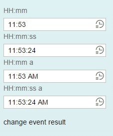
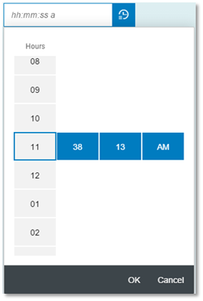
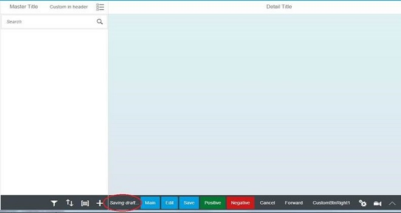
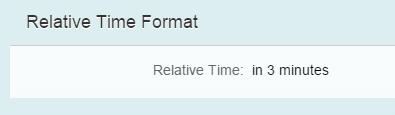
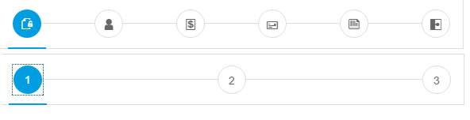
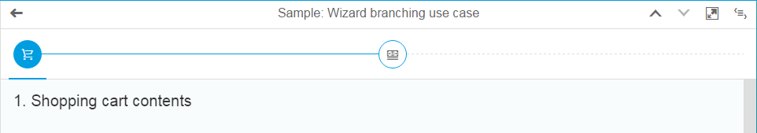
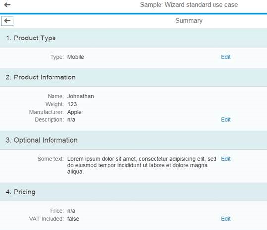

What's New in OpenUI5 (Version 1.32)
With this release the UI development toolkit for HTML5 (OpenUI5) is upgraded from version 1.30 to 1.32.
In the following sections, we list the main new features and enhancements to OpenUI5. For a complete, detailed list of all new and enhanced functions, see: Change Log.
Testing
In this tutorial, you learn how to test application functionality using the testing tools that are delivered with OpenUI5. While going through the steps of this tutorial, you will write tests using QUnit, OPA5, and the mock server. Additionally, you will learn about testing strategies, Test Driven Development (TDD), and much more: Testing
-
Inspect OpenUI5 controls and review their properties, bindings, and data model
-
Modify control properties on-the-fly and see how this affects the rendering and behavior
-
Find relevant framework information for OpenUI5-based apps
 . Once installed, it is then available
in the Google Chrome developer tools (by choosing F12) and becomes active
when an OpenUI5 app is
loaded.
. Once installed, it is then available
in the Google Chrome developer tools (by choosing F12) and becomes active
when an OpenUI5 app is
loaded.For more information, see UI5 Inspector.
-
sap.m.TimePicker: A composite control, consisting of an input field used to type the time, and a dropdown, which contains the picker itself. The user can enter the time using the keyboard on desktop devices.
In compact mode, the time-related fields can be easily and quickly filled by scrolling, tapping or using the arrows. A mask containing placeholder symbols is integrated into the input field. This helps users to enter correct symbols and also validates them.
This control is responsive and works seamlessly on mobile devices.
-
sap.m.DraftIndicator: The DraftIndicator control shows the current draft state – either saving or already saved. There is also an integration use case that enables app developers to show a draft state inside the footer of the semantic page - this has been implemented as part of the draft handling concept. The DraftIndicator does not block the current screen, meaning other operations can be triggered in parallel.

-
One Page Acceptance Tests (OPA)
-
To improve error handling, a test throwing an exception in OPA’s check/success or matcher functions now fails immediately when the exception is thrown. OPA will not execute further waitFor statements added by the failed test. Subsequent tests of a failed test will still be executed.
-
You can now use sap.ui.test.matchers.BindingPath to check whether a control has a binding context with the exact same binding path.
-
OPA is now compatible with QUnit 2.x. As of now, the QUnit assert object is mapped to the OPA assert object. You should now call functions like strictEqual(), ok(), and equal() on the Opa5.assert object to make sure that the tests still work when QUnit is upgraded to version 2.x.
-
-
XSRF token handling in OData Model V2: The XSRF token will now be fetched via an asynchronous HEAD request to improve the performance.
-
Data state for bindings: Bindings can now have a data state which is accessible via an API.
-
XML Templating
-
The new require statement lets template authors specify the modules required for processing the templates. This prevents template view users from having to require these modules. For more information, see require
-
The new alias statement in XML templating reduces the typing effort. For more information, see alias.
-
Extension points can be used in XML templating to extend the standard with custom content. For more information, see Extension Points.
-
The XMLPreprocessor.IContext interface has been extended to let custom formatter functions access arbitrary path segments in binding paths. For more information, see Replacement of Bindings.
-
-
Annotation Helper
-
It is now possible to integrate translatable texts into XML templates by using simple bindings to a hard coded model name.
-
The sap.ui.model.odata.AnnotationHelper is now automatically required in XML templating.
-
AnnotationHelper supports annotations for an EntitySet.
-
AnnotationHelper provides a method to create property settings (constant or binding info) from binding expressions.
-
The documentation now explicitly mentions that xx-bindingSyntax needs to be set to complex to avoid warnings on the console.
For more information, see Annotation Helper.
-
-
Field Groups: Controls can now be assigned to logical groups which will trigger an event if this group is left.
Relative Date / Time Formatter: We now provide new options to provide relative date and times (e.g. seconds, minutes etc.)
-
New Design for Busy Indicator: The visual design of the local and global busy indicator has been updated.
-
sap.m.ComboBox: Improved rendering performance by internally using sap.m.SelectList instead of sap.m.List.
-
sap.m.MessagePopover: The text size has been increased on desktop devices. A new showArrow property has been added, which opens the MessagePopover in Combobox mode, without the arrow.
sap.m.MultiInput: Improved usability by always showing in multi-line mode on phones.
sap.m.MultiInput and MultiComboBox: Added support for copy-and-pasting tokens to Excel.
- sap.m.OverflowToolbar:
-
Prioritization: You can set a priority to each OverflowToolbar item using the new priority property of the LayoutData element. The priority defines the overflow order of the items when the size of the OverflowToolbar is not enough. The default priority of each OverflowToolbar item is High. All priorities are accessible through the sap.m.OverflowToolbarPriority type.
-
Grouping: The new group property of the LayoutData element enables OverflowToolbar items to overflow together even if they are on different positions. The default value of the property is 0, meaning that the element does not belong to any group. When group elements have different priorities, the priority of the group is defined by the maximum priority of its elements.
-
sap.m.SimpleForm: Added support for AriaLabelledBy.
-
sap.m.Slider: Added option to disable handle tooltip.
-
sap.m.UploadCollection: In the 'Upload Pending' scenario, you can now select multiple attachments in one step and add these to the upload list. The control supports canceling the upload of a file of this selection without canceling the other selected files.
-
sap.m.Wizard:
-
The new icon property on the WizardStep control enables developers to replace the subsequent step numbering in the progress navigation part of the Wizard control. In order for the icon to be displayed, each step in the Wizard should have this property defined, otherwise the default numbering will be displayed.
 -
A branching mode has been implemented to enable users to take multiple paths within a single wizard. Different outcomes and steps are displayed depending on input from the previous steps. Dashed lines in the wizard progress navigator indicate that all subsequent steps may vary.
 -
A new Summary page has been implemented that is displayed after all steps in a wizard are completed. This enables users to review their input at a glance and edit it if needed.

-
-
sap.ui.layout.DynamicSideContent: The aspect ratio on M breakpoint is changed – the side content area now has a 340px fixed width instead of 33% (for better usability on tablet devices and small screens).
Explored app of the Demo Kit: For better readability of the sample code in the code viewer, line numbering and syntax highlighting have been implemented.
-
You can now find a list of terms with their definition in the new Glossary.